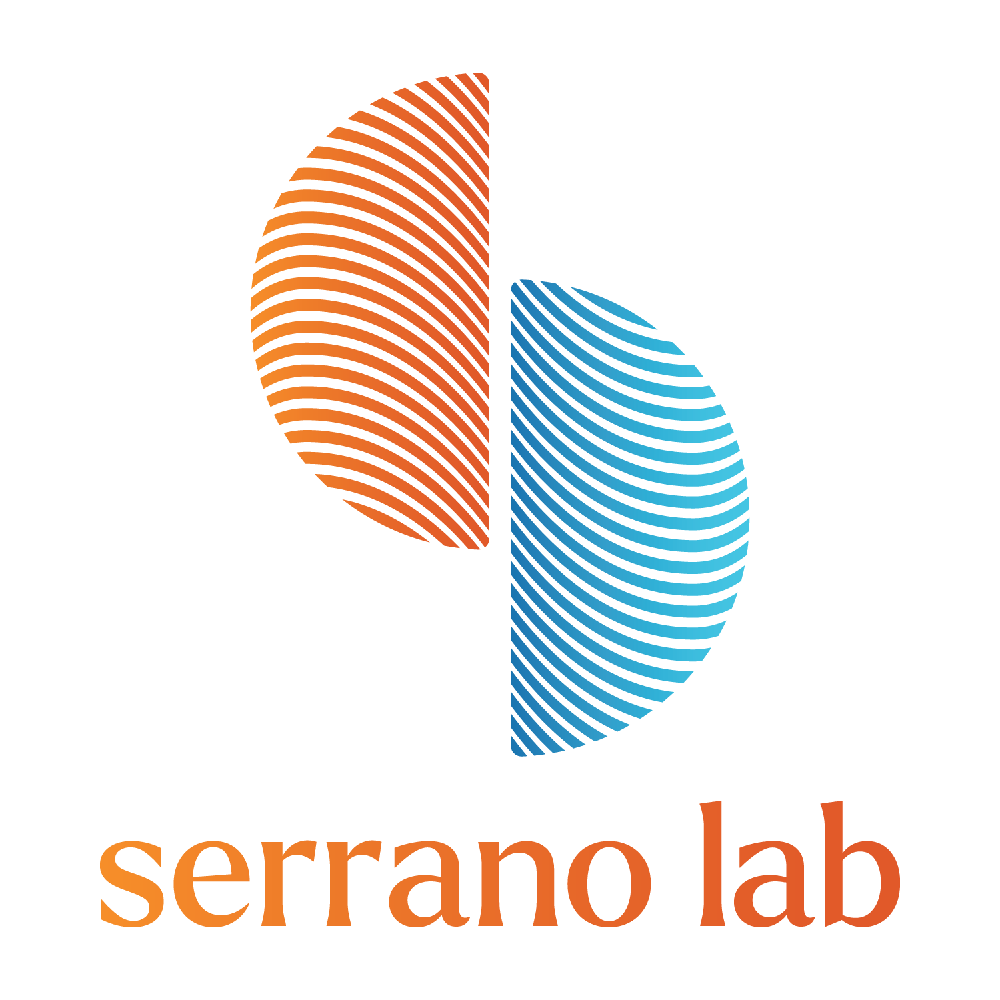

Serrano Lab Training Matrix
Mentee Name:
Download CSV
Download PDF
Send Progress
Enter your name and trainee level below. You’ll only see skills relevant to you plus core requirements.
Expand each section and update your progress for every skill and year.
(Your progress is auto-saved.)
Attach evidence (URLs; semicolons) and any notes for each skill.
Click
Download CSV
to save,
Download PDF
to print, or
Send Progress
to submit.
Undergraduate
PhD
Post-doc
Staff/Technician
©
Serrano Lab. All rights reserved.